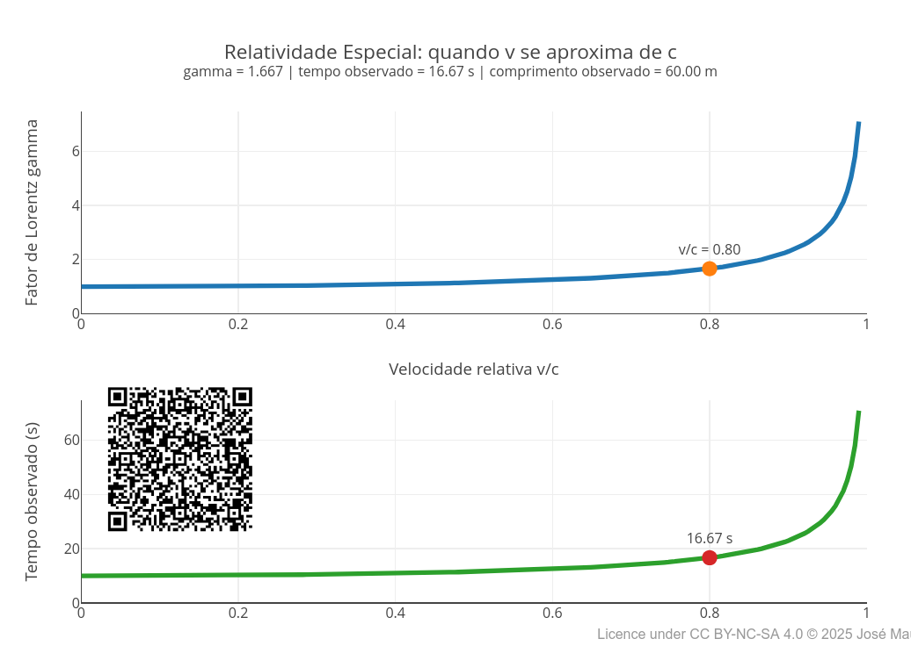
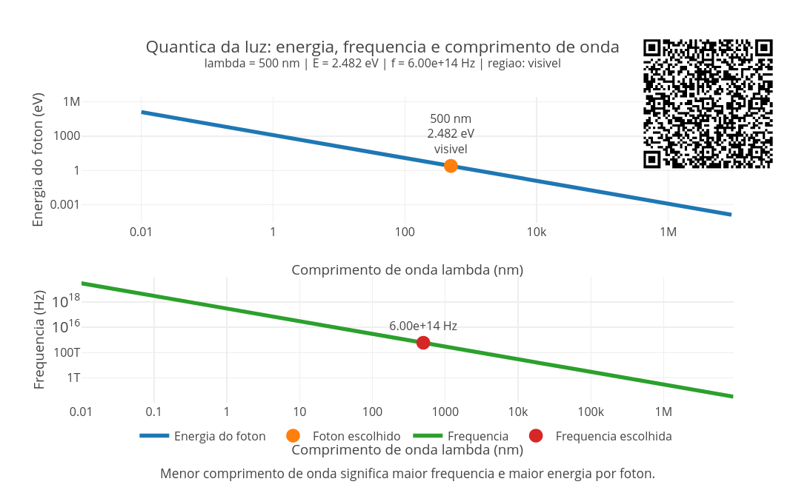
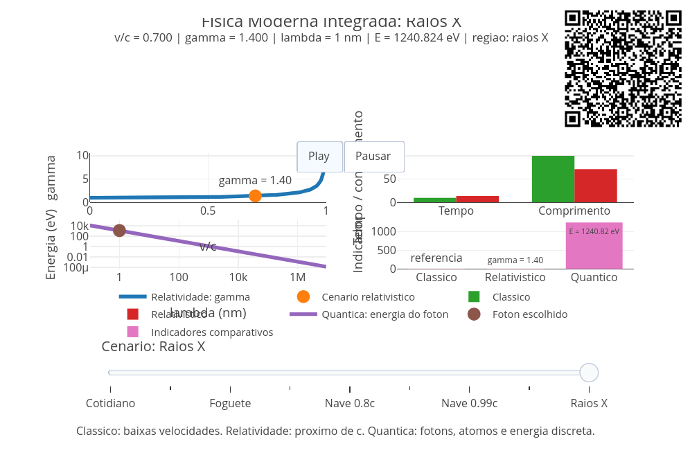

8 Relatividade e Quântica
Você já percebeu que quase tudo ao seu redor depende de uma Física que não aparece no cotidiano ? O GPS do celular precisa corrigir efeitos relativísticos. O laser depende da interação quântica entre luz e matéria. O painel solar funciona porque fótons arrancam elétrons de materiais. O microscópio eletrônico usa comportamento ondulatório de partículas. O computador moderno só existe porque entendemos sobre semicondutores, bandas de energia e elétrons em escala quântica. A Física Moderna entra em cena quando a Física Clássica não consegue explicar alguns aspectos do mundo.
Exemplos não faltam, como o comportamento de um objeto em velocidades próximas à velocidade da luz, os fenômenos que ocorrem nas escalas muito pequenas de átomos e subpartículas, em energias muito altas, e em situações onde medir já interfere no que é medido. A ideia desse capítulo é aproximar dois grandes ramos da Física Moderna, a Relatividade, que muda nossa ideia de espaço, tempo, massa e energia, e a Física Quântica, que muda nossa ideia de matéria, luz, trajetória, medida e probabilidade.
Depois de explorar, você consegue:
- explicar por que espaço e tempo não são absolutos;
- interpretar dilatação do tempo, contração do comprimento e fator de Lorentz;
- relacionar massa e energia pela clássica expressão E = mc^2;
- compreender a dualidade onda-partícula;
- relacionar frequência, comprimento de onda e energia de fótons;
- reconhecer aplicações reais da Física Moderna em GPS, lasers, painéis solares, medicina, eletrônica e computação;
- comparar previsões clássicas, relativísticas e quânticas em situações-limite;
- manipular códigos para visualizações interativas no tema.
Física Moderna não é para amadores”. Antes de qualquer definição formal, experimente o JSPlotly que abre esse capítulo. Ele trata da Relatividade, quando a velocidade muda tempo e espaço. Por ora, não se preocupe com os termos, apenas experimente o app. O script mostra três efeitos centrais da relatividade especial: o aumento do fator de Lorentz, a dilatação do tempo, e a contração do comprimento.

Os três gráficos do app referem-se à relatividade, mas vista por ângulos diferentes. O primeiro mostra que o fator de Lorentz cresce cada vez mais rápido quando a velocidade se aproxima da velocidade da luz (299.792 m/s). O segundo mostra que o tempo observado aumenta com esse fator. E o terceiro mostra que o comprimento observado diminui.
A variável principal é betaEscolhido, que representa a razão entre a velocidade do objeto v e a velocidade da luz c:
\[ \beta = \frac{v}{c} \tag{8.1}\]
Quando betaEscolhido se aproxima de 1, a velocidade se aproxima da velocidade da luz. Nesse limite, tempo e espaço deixam de se comportar como no cotidiano. Assim, execute o script com:
const betaEscolhido = 0.80;Depois teste valores menores e maiores (0.10, 0.50, 0.95, e 0.99). Observe principalmente o que acontece quando o valor passa de 0.90. Depois altere também:
const tempoProprio = 10;
const comprimentoProprio = 100;Veja como os efeitos relativísticos aparecem sobre diferentes tempos e comprimentos. No cotidiano, velocidades pequenas produzem efeitos imperceptíveis. Mas, em velocidades muito altas, surge o fator de Lorent (\(\gamma\)). Ele é um número adimensional (sem unidade de medida) que indica o grau de dilatação do tempo e de contração do espaço, sendo sempre maior ou igual a 1. Dessa forma, à medida que um objeto se aproxima da velocidade da luz, ele quantifica os efeitos relativísticos, como a dilatação do tempo, contração do comprimento e aumento da massa relativística. Uma equação simplificada para o fator é dada abaixo:
\[ \gamma = \frac{1}{\sqrt{1-\beta^2}} \tag{8.2}\]
Esse fator modifica as medidas observadas. O tempo observado aumenta:
\[ t = \gamma \cdot t_0 \tag{8.3}\]
E o comprimento observado diminui:
\[ L = \frac{L_0}{\gamma} \tag{8.4}\]
Por isso, quanto maior a velocidade relativa, mais o tempo se dilata e mais o comprimento se contrai. Segue um breve tutorial de uso do app.
- Rode o script com
betaEscolhido = 0.80; - Observe os três gráficos;
- Veja o fator de Lorentz no primeiro gráfico;
- Compare o tempo próprio com o tempo observado;
- Compare o comprimento próprio com o comprimento observado;
- Troque para
betaEscolhido = 0.10; - Observe como os efeitos quase desaparecem;
- Troque para
betaEscolhido = 0.95; - Veja como os efeitos crescem rapidamente;
- Teste
betaEscolhido = 0.99; - Observe que pequenas mudanças próximas da velocidade da luz produzem grandes diferenças.
Agora alguns cenários para você “relativizar”.
- Velocidade cotidiana. Por que não percebemos dilatação do tempo em situações comuns ?
const betaEscolhido = 0.01;- Velocidade intermediária. A metade da velocidade da luz já produz efeitos importantes ?
const betaEscolhido = 0.50;- Próximo da luz. Por que o tempo observado aumenta tanto quando a velocidade se aproxima de
c?
const betaEscolhido = 0.95;- Quase velocidade da luz. O que acontece com tempo e comprimento quando
v/cfica muito próximo de 1 ?
const betaEscolhido = 0.99;- Viagem curta no referencial do viajante. Como uma pequena duração medida pelo viajante pode parecer maior para outro observador ?
const betaEscolhido = 0.95;
const tempoProprio = 5;- Nave comprida. Como o comprimento observado muda quando o objeto se move muito rapidamente ?
const betaEscolhido = 0.90;
const comprimentoProprio = 200;No geral, a ideia que fica pode parecer bem estranha na Física Moderna. Quando a velocidade se aproxima da velocidade da luz, o comportamento do tempo e do espaço deixa de parecer familiar. O tempo e o comprimento medidos por observadores diferentes podem não ser os mesmos.
A grande “sacada” conceitual é perceber que tempo e espaço não são absolutos, mas dependem do movimento relativo entre o observador e o objeto.
Por dentro do script
O script percorre valores de velocidade relativa entre 0 e 0,99:
for (let i = 0; i <= n; i++) {
let b = (betaMax * i) / n;
let g = 1 / Math.sqrt(1 - b * b);Para cada valor de beta, calcula o fator de Lorentz:
gamma.push(g);Depois calcula o tempo observado:
tempoObservado.push(g * tempoProprio);E o comprimento observado:
comprimentoObservado.push(comprimentoProprio / g);O ponto destacado no gráfico mostra exatamente o valor escolhido pelo aluno:
const betaEscolhido = 0.80;Assim, a equação vira curva, e a curva vira uma comparação visual.
A Física Clássica funciona muito bem em nosso cotidiano. Ela descreve quedas, lançamentos, colisões, ondas, máquinas, fluidos e circuitos com enorme sucesso. Mas, no final do século XIX e início do século XX, alguns problemas começaram a desafiar essa visão. A luz se comportava como onda, mas em certos experimentos parecia partícula. Elétrons eram partículas, mas em certas situações pareciam ondas. O tempo parecia não ser absoluto, embora a velocidade da luz fosse a mesma para diferentes observadores. A energia parecia contínua, mas certos fenômenos só podiam ser explicados se ela viesse em “pacotes” de luz, ou fótons.
Relatividade: espaço e tempo em movimento
Na relatividade especial, a velocidade da luz no vácuo é tomada como constante fundamental, mudando tudo. Se a velocidade da luz é a mesma para diferentes observadores, então espaço e tempo precisam se ajustar. O fator que mede esse ajuste é o fator de Lorentz:
\[ \gamma = \frac{1}{\sqrt{1 - \frac{v^2}{c^2}}} \tag{8.5}\]
Na Equação 8.5, \(v\) é a velocidade relativa entre o observador e o objeto em movimento, e \(c\) é a velocidade da luz.
Quando \(v\) é muito menor que \(c\), o fator de Lorentz é praticamente unitário, 1. Nesse caso, a Física Clássica continua funcionando muito bem. Mas quando \(v\) se aproxima de \(c\), \(gamma\) cresce rapidamente. A partir daí, aparecem efeitos relativísticos importantes:
\[ \Delta t = \gamma \Delta t_0 \tag{8.6}\]
O intervalo de tempo medido por um observador pode ser maior que o tempo próprio (\(\Delta t_0\); intervalo de tempo medido por um observador que está em repouso em relação ao evento que está acontecendo). Também ocorre contração do comprimento na direção do movimento:
\[ L = \frac{L_0}{\gamma} \tag{8.7}\]
O comprimento medido pode ser menor que o comprimento próprio (\(L_0\); distância ou tamanho medido por um observador que está em repouso em relação ao objeto). Esses efeitos não são “defeitos de observação”, mas fazem parte da estrutura do espaço-tempo.
Massa e energia: duas formas de representar a mesma realidade
Uma das consequências mais conhecidas da relatividade é a equivalência entre massa e energia:
\[ E = mc^2 \tag{8.8}\]
Essa expressão mostra que massa pode ser entendida como uma forma concentrada de energia. Ela ajuda a compreender fenômenos nucleares, produção de energia em estrelas, decaimentos radioativos e processos em partículas.
Quântica: energia, luz e matéria em pacotes
Na Física Quântica, muitos fenômenos não podem ser explicados quando se supõe que a energia varia continuamente. Para a luz, a energia de um fóton é dada por:
\[ E = hf \]
Em que \(E\) é a energia do fóton, \(h\) é a constante de Planck (6,626x10\(^{-34}\)J*s), e \(f\) é a frequência da radiação. Como a velocidade da luz também se relaciona com frequência e comprimento de onda:
\[ c = \lambda f \tag{8.9}\]
podemos escrever:
\[ E = \frac{hc}{\lambda} \tag{8.10}\]
Isso revela que, quanto menor o comprimento de onda, maior a energia do fóton. Por isso radiações como ultravioleta, raios X e raios gama são mais energéticas que ondas de rádio, micro-ondas ou luz infravermelha.
Dualidade onda-partícula
A luz pode se comportar como onda em fenômenos como interferência e difração (capacidade de ondas em contornar obstáculos ou se espalhar ao passar por fendas). Mas também pode se comportar como partícula em fenômenos como o efeito fotoelétrico (emissão de elétrons por material atingido por onda eletromagnética). A matéria também apresenta dualidade. Partículas como elétrons podem apresentar comportamento ondulatório. A relação de *de Broglie* associa comprimento de onda ao momento de uma partícula (tendência em manter movimento ou causar rotação):
\[ \lambda = \frac{h}{p} \tag{8.11}\]
Foram dessas observações que surgiram tecnologias como microscópios eletrônicos e equipamentos para difração de elétrons ao final da década de 1920 e início da década de 1930, bem como novas e recentes tecnologias baseadas em propriedades quânticas da matéria. Como o computador quântico, por exemplo, que utiliza esses princípios para um processamento ultra-avançado de dados.
Você observou até agora como espaço e tempo deixam de ser absolutos na relatividade. Na verdade, até a própria luz deixa de se comportar apenas como uma onda contínua na Física Quântica, também. Nesse caso, a energia luminosa aparece em pacotes discretos chamados fótons, partículas fundamentais da radiação eletromagnética. O próximo app de JSPlotly explora essa ideia, relacionando comprimento de onda, frequência e energia da luz em diferentes regiões do espectro eletromagnético.

O script mostra como comprimento de onda, frequência e energia estão conectados na Física Quântica. A ideia central é que a luz transporta energia em pacotes chamados fótons. Cada fóton possui uma energia dada por:
\[ E = hf \tag{8.12}\]
Como frequência e comprimento de onda estão relacionados:
\[ f = \frac{c}{\lambda} \tag{8.13}\]
Então:
\[ E = \frac{hc}{\lambda} \tag{8.14}\]
Isso significa que comprimentos de onda menores correspondem a frequências maiores e fótons mais energéticos.
Agite antes de usar
O primeiro gráfico mostra a energia do fóton, enquanto o segundo mostra sua frequência. Ambos usam escala logarítmica porque o espectro eletromagnético cobre intervalos gigantescos de valores (de 10\(^{-12}\) m - ondas de rádio, a 10\(^3\) m - raios gama). Execute o script com o seguinte comprimento de onda:
const lambdaEscolhido_nm = 500;Depois teste diferentes regiões do espectro (ex: comprimentos de 700, 550, 450, 100, e 0.1 nm). E observe como energia e frequência mudam drasticamente. Compare especialmente luz visível (320-700), ultravioleta (200-320) e raios X (0.01-10). E perceba que diferentes tipos de luz possuem energias bastante diferentes. E se quiser arriscar um pouquinho mais, tente os raios-gama (0.001-0.05).
Uma grande vantagem das simulações digitais é que elas não fazem mal algum no mundo real !
No script, o comprimento de onda controla tudo. Quando lambda diminui, a frequência e a energia do fóton aumentam. Por isso que o infravermelho possui fótons menos energéticos, a luz visível possui energias intermediárias, e os raios X e raios gama possuem energias muito maiores. Segue um rápido tutorial de uso.
- Rode o script com
lambdaEscolhido_nm = 500; - Observe a posição do ponto nos dois gráficos;
- Veja a energia do fóton;
- Veja a frequência correspondente;
- Troque para
700 nm; - Compare com a luz vermelha;
- Troque para
450 nm; - Observe o aumento da energia;
- Teste
100 nm; - Veja a região ultravioleta;
- Teste
0.1 nm. - Observe a região de raios X;
- Compare como energia e frequência crescem quando o comprimento de onda diminui.
Segue também alguns cenários para você explorar:
- Luz vermelha. Por que a luz vermelha possui menos energia por fóton do que a luz azul ?
const lambdaEscolhido_nm = 700;Luz verde. Troque o comprimento de onda para 550. A região central do visível possui energia intermediária ?
Luz azul. Agora edite para 450. Por que a luz azul possui maior frequência e maior energia ?
Ultravioleta. Mude para 100. Por que radiações ultravioletas podem causar mais danos biológicos ?
Raios X. Mude para 0.1. Como fótons tão energéticos conseguem atravessar materiais e tecidos ?
Infravermelho distante. Mude para 1000000 (pode escrever mais simples no código, como 1e6). Por que ondas muito longas possuem frequências e energias menores ?
Após experimentar os valores acima, você deve perceber visualmente que, para um comprimento de onda menor, a frequência e a energia são maiores. Ou seja, cor, radiação e energia numa única relação matemática.
Por dentro do script
O script começa definindo as constantes fundamentais, constante de Planck (\(h\)) e velocidade da luz:
const h = 6.626e-34;
const c = 3.0e8;Depois calcula a energia do fóton:
const energia_J = h * c / lambda_m;Em seguida converte para elétron-volts:
return energia_J / e;A frequência é calculada por:
return c / lambda_m;Depois o script percorre vários comprimentos de onda em escala logarítmica:
for (let i = -2; i <= 7; i += 0.04)Isso permite visualizar simultaneamente regiões muito diferentes do espectro eletromagnético.
O ponto destacado mostra o fóton escolhido por você:
const lambdaEscolhido_nm = 500;Assim, você pode navegar do infravermelho até os raios gama alterando apenas um parâmetro…e sem se queimar !
A Física Quântica tem lugar no mundo quando percebemos que a energia nem sempre varia continuamente. Às vezes ela aparece em pacotes discretos chamados os fótons, uma das primeiras portas para esse novo modo de enxergar a natureza. No cotidiano esses efeitos são pequenos demais para serem percebidos. Mas em situações que envolvem altas velocidade ou grandes energias, como satélites, raios cósmicos e tecnologias de alta precisão, a relatividade precisa ser levada em conta, já que o movimento em grandes velocidades também altera as medidas de espaço e tempo.
A quantização da luz está presente também em muitas tecnologias modernas, como paineis solares, lasers, sensores digitais, exames de raios X, telecomunicações, espectroscopia, dispositivos de Astronomia e tantos outros. E também está presente no LED (diodo emissor de luz), aquela luzinha fria que tem em quase todos os equipamentos eletrônicos, incluindo equipamentos de som e celulares, e que emite luz por um efeito fotoelétrico “ao contrário”, quando a eletricidade vira fótons quantizados.
Para experienciar um pouco mais sobre a relativização do espaço-tempo e a quantização da luz, que tal um último script de JSPlotly ? Esse terceiro script une os dois mundos em uma mesma visualização. Dessa vez você compara cenários clássicos, relativísticos e quânticos ao mesmo tempo, percebendo que a Física Moderna não substitui completamente a Física clássica, mas amplia seus limites de velocidade, energia ou escala. O app integrado da Figura 8.4 combina efeitos relativísticos e quânticos usando uma animação em diferentes cenários interativos..

O script integra dois pilares da Física Moderna, a Relatividade Especial e a Física Quântica. Agora, diferentes cenários podem ser comparados usando um único sistema interativo. O script mostra simultaneamente:
- crescimento do fator relativístico;
- dilatação do tempo;
- contração do comprimento;
- energia dos fótons;
- comparação entre mundo clássico, relativístico e quântico.
A ideia principal é perceber que a Física Moderna surge quando velocidades, energias ou escalas deixam de se comportar como no cotidiano.
Agite antes de usar
O gráfico superior esquerdo mostra a relatividade especial. O gráfico superior direito compara medidas clássicas e relativísticas. O gráfico inferior esquerdo mostra a energia dos fótons. E o gráfico inferior direito resume os indicadores comparativos.
Execute o script e clique em Play, observando como os cenários mudam automaticamente. Depois utilize o slider inferior para navegar manualmente entre:
- cotidiano;
- avião rápido;
- foguete;
- nave relativística;
- ultravioleta;
- raios X.
Observe como os gráficos mudam juntos. Compare especialmente o crescimento de gamma, a energia dos fótons, e as diferenças entre o comportamento clássico e moderno. No cotidiano as velocidades são pequenas comparadas à velocidade da luz, as energias são relativamente baixas, e os efeitos quânticos quase não aparecem diretamente. Por isso, o mundo parece bastante intuitivo. Mas quando as velocidades se aproximam de c, os comprimentos de onda ficam muito pequenos, ou as energias ficam muito altas, surgem efeitos relativísticos e quânticos, socorridos pela Física Moderna na explicação desses extremos.
Segue um tutorial para uso do app.
- Rode o script;
- Clique em
Play; - Observe primeiro o gráfico relativístico superior esquerdo;
- Veja o crescimento de
gamma; - Compare os gráficos de tempo e comprimento;
- Observe o gráfico quântico inferior esquerdo;
- Veja como a energia cresce quando
lambdadiminui; - Observe os indicadores comparativos no canto inferior direito;
- Use o slider para voltar aos cenários;
- Compare cotidiano e nave relativística;
- Compare luz visível e raios X;
- Observe como diferentes regiões da Física aparecem em diferentes escalas.
Perceba, exercitando-se acima, que Relatividade e Quântica mostram quando a Física clássica deixa de ser suficiente. Seguem alguns cenários para você “brincar”:
Cotidiano. Por que os efeitos relativísticos e quânticos parecem quase invisíveis no dia a dia ?
Avião rápido. Mesmo velocidades muito altas para humanos ainda são pequenas comparadas à velocidade da luz ?
Nave 0.5c. O que começa a mudar quando metade da velocidade da luz é atingida ?
Nave 0.95c. Por que tempo e comprimento passam a se comportar de modo tão diferente do cotidiano ?
Ultravioleta. Por que radiações ultravioletas possuem fótons mais energéticos que a luz visível ?
Raios X. Como comprimentos de onda tão pequenos produzem energias tão grandes ?
Comparação integrada. O que há em comum entre efeitos relativísticos e efeitos quânticos ?
A proposta visual que fica aqui é a de que Física clássica funciona bem em condições cotidianas. Mas é a Relatividade da Física Moderna quem domina em velocidades extremas, e é a Física Quântica quem domina em escalas microscópicas e energias altas. Em outras palavras, a Moderna atua quando a Clássica é limitante para explicar o mundo.
Por dentro do script
O script começa definindo funções básicas:
function gammaLorentz(beta)e:
function energiaEV(lambda_nm)Depois cria vários cenários:
const cenarios = [...]Cada cenário possui uma velocidade relativa e um comprimento de onda característico.
Por exemplo:
{ nome: "Nave 0.95c", beta: 0.95, lambda: 380 }Depois o script calcula o fator relativístico, o tempo observado, o comprimento observado, a energia do fóton, e a frequência da luz. Os frames geram a animação automática e o slider permite comparar manualmente cada cenário:
frames.push({...})Agora o sublime momento para experiências e reflexões do córtex cerebral (pé no chão) e da glândula pineal (pé nas nuvens).
- E se a velocidade da luz fosse menor ?
- E se a constante de Planck fosse maior ?
- E se efeitos quânticos fossem visíveis no cotidiano ?
- E se humanos pudessem viajar a 99 % da velocidade da luz ?
- E se elétrons se comportassem apenas como pequenas bolinhas clássicas ?
- E se o tempo realmente passasse de forma diferente para pessoas em movimentos muito distintos ?
- E se astronautas em viagens extremamente rápidas envelhecessem menos que pessoas na Terra ?
- E se um relógio em uma nave relativística registrasse uma duração diferente daquela observada por alguém parado ?
- E se o espaço não fosse fixo, mas dependesse do movimento do observador ?
- E se objetos muito rápidos realmente parecessem menores na direção do movimento ?
- E se a velocidade da luz fosse diferente ? O Universo ainda seria parecido com o que conhecemos ?
- E se fosse possível perceber diretamente os efeitos relativísticos no cotidiano, como em carros ou aviões ?
- E se a luz não viesse em pacotes discretos chamados fótons ?
- E se a cor da luz estivesse ligada não apenas à aparência, mas também à quantidade de energia transportada ?
- E se nossos olhos fossem capazes de enxergar ultravioleta ou infravermelho ?
- E se o céu tivesse outra aparência para seres vivos capazes de perceber diferentes regiões do espectro eletromagnético ?
- E se fótons de raios X fossem visíveis aos nossos olhos ?
- E se o Sol emitisse principalmente raios gama em vez de luz visível ?
- E se tecnologias modernas como celulares, GPS, lasers e painéis solares deixassem de funcionar sem Física Moderna ?
- E se a Física clássica fosse apenas uma aproximação válida para velocidades baixas e energias moderadas ?
- E se o Universo microscópico obedecesse regras completamente diferentes das percebidas no cotidiano ?
- E se partículas pudessem se comportar como ondas ?
- E se observar um fenômeno alterasse o próprio fenômeno observado ?
- E se espaço, tempo, matéria e energia fossem partes de uma mesma estrutura mais profunda ?
- E se o mundo que percebemos fosse apenas uma pequena faixa de tudo o que realmente existe no Universo ?
- E se diferentes observadores pudessem discordar sobre tempo e espaço, mas ambos estivessem corretos ?
- E se viajar perto da velocidade da luz transformasse completamente nossa percepção do passado e do futuro ?
- E se civilizações extremamente avançadas utilizassem efeitos relativísticos e quânticos como algo cotidiano ?
- E se nossa intuição estivesse adaptada apenas a uma faixa muito limitada da realidade física ?
- E se a Física Moderna não fosse “estranha”, mas apenas distante da escala em que nossos sentidos evoluíram ?
- E se compreender o Universo exigisse abandonar parte daquilo que parece intuitivo ?
- E se o mais estranho da Física Moderna fosse justamente o fato de ela funcionar tão bem ?
A Física Moderna não substitui a Física Clássica em todas as situações, mas amplia seus limites. A Física Clássica continua excelente para muitas situações cotidianas. Mas, quando entramos no muito rápido, no muito pequeno ou no muito energético, a Física Moderna toma um assento cativo.
Detalhando um pouco, é assim com os sistemas de navegação por satélites, GPS (Global Positioning System), por exemplo, que se movem rapidamente e estão em regiões onde a gravidade é diferente da superfície da Terra. Nesse caso, a relatividade especial e relatividade geral precisam ser consideradas para corrigir medidas de tempo, já que, sem essas correções, a localização por GPS acumularia erros.
Lasers dependem de transições eletrônicas entre níveis de energia, e esse níveis são quânticos. Não são quaisquer energias que os elétrons podem assumir em átomos e materiais. Painéis solares, por sua vez, funcionam quando a luz chega em fótons. Quando esses fótons interagem com certos materiais (ex: silício), podem liberar elétrons e gerar corrente elétrica. Esse processo depende diretamente da relação entre energia, frequência e estrutura eletrônica dos materiais.
Em medicina diagnóstica, diversas técnicas como raios X, tomografia, radioterapia, PET scan e ressonância magnética, envolvem ideias modernas sobre radiação, núcleos, partículas, campos e interação entre energia e matéria. Também para computadores e celulares, diversos componentes eletrônicos, tais como transistores, semicondutores, LEDs, sensores, memórias e processadores, dependem de propriedades quânticas dos materiais.
Separação de comandos, inserção de comentários, e boas práticas
Os comandos em JS são separados por ponto e vírgula, “;”. Já os comentários constituem trechos não interpretados, comumente utilizados em programação. Comentários são tremendamente úteis quando se deseja colocar um título no script de código, por exemplo, como para explicar quem é quem nas variáveis ou explicar uma determinada ação no código, bem como apontar uma futura melhoria, entre muitos (lista ToDo, ou “para fazer”). Em JS, os comentários são alternativamente inseridos por ” // “ antes de cada comando, ou por ” /…./ “, para comentários mais extensos (mais de uma linha).
Códigos em JS podem ser inseridos também junto à páginas web (HTML) com seus comandos intercalados pela notação que segue (etiquetas ou tags):
Uma característica interessante no JS é que tanto faz colocar ou não espaços entre os comandos, pois a linguagem não interpreta esses espaços. Contudo, dentro das boas práticas em programação, é aconselhável separar blocos de comandos por identação de 2 espaços, de modo a facilitar a leitura do código. A identação é feita com a barra de espaços do teclado, por exemplo, mas há alguns programas fazem isso automaticamente enquanto ao se clicar em Enter. Outro cuidado que deve ser apreciado diz respeito ao uso de fonte maiúscula ou minúscula. JS interpreta diferentemente termos em caixa alta (maiúscula) ou caixa baixa do teclado (minúscula), então é bom prestar atenção pra não incorrer em erro de interpretação.
Declaração de variáveis
Entre os diversos tipos de variáveis, duas são frequentemente utilizadas: const e let. A variável const é utilizada para se atribuir um valor fixo a uma variável no código, enquanto a variável let é empregada quando se deseja reatribuir um valor a ela, por meio de algum cálculo ou laço iterativo (loop). Exemplificando, quando se deseja variáveis de controle que mudam ao longo do tempo (sliders, passos, intervalos).
Obs: em versões antigas de JS é também empregado var, hoje em desuso.
“Botando a mão na massa”
Como esse treinamento envolve instruir o algoritmo com uma entrada para que sua interpretação resulte numa saída, aqui propomos a saída pelo comando print, como segue.
const a = -0.2;
print(a) Para esse treinamento, use o JSPlotly de treinamento visto nos dois últimos capítulos. Assim, teste a atribuição da variável const e do comando print por cópia do trecho acima e cola no campo de texto ÁREA PARA DIGITAR COMANDOS do script. Existem outros comandos de saída para JS, como console.log() e document.body.appendChild(), mas não utilizáveis pelo JSPlotly.
Pode-se atribuir também um texto para apresentar a constante, veja:
const a = -0.2;
print("constante:",a)const a = 5; // variável constante (não se altera ao longo do código)
const b = 10; // variável que pode alterar seu valor no código
print(a*b)Outro exemplo, com inserção de texto antes do resultado:
let a = 5;
const b = 10;
let resultado = a + b;
print("Soma de a + b:", resultado);const versus let
Pode parecer que const e let são distintas apenas na aparência, já que operam de modo intercambiável. Contudo, para explicitar a diferença entre os dois comandos, apague o ecrã gráfico (clean) e substitua a linha de código da seção anterior pela que segue na ÁREA PARA DIGITAR COMANDOS do script:
let passo = 0.5; // usuário pode alterar
let x0 = 0; // domínios dinâmicos
print(passo, x0)
// ... mais tarde:
passo = 0.2; x0 = 30;
print(passo, x0)Aparentemente, o resultado sugere que na prática nada muda, sendo a diferença mais centrada na clareza e segurança do código. Mas não é bem assim. Experimente agora trocar o campo pra executar o código abaixo:
Agora substitua a variável do “contador” para const ao invés de let. O resultado incorrerá no erro abaixo:

Resumindo: para constantes, use const e para variável reatribuível use let.
Tipos de dados
Como é comum também em outras linguagens, JavaScript possui alguns tipos comuns para definição de dados. Para uso de Plotly.js, são bem significativos:
Seguem alguns exemplos práticos. Experimente trocar cada um na saída print:
// Numbers:
let comprimento = 116;
let peso = 75;
// Strings:
let color = "Yellow";
let lastName = "Johnson";
// Booleans
let x = true;
let y = false;
// Object:
const membro = {firstName:"John", lastName:"Doe"};
// Array object:
const carros = ["Saab", "Volvo", "BMW"];
// Date object:
const datas = new Date("2022-03-25");
// Saídas:
print(comprimento)Constantes
Por vezes, é necessária a inserção de constantes matemáticas em equações para construção de gráficos ou para fazer cálculos. Seguem alguns exemplos. Para a saída no JSPlotly customizado abaixo, basta o bom e velho print que segue ao também bom e velho clean.
Math.PI - valor de (pi), aproximadamente 3.14159
Math.E - valor da constante de Euler, aproximadamente 2.71828
Math.LN2 - logaritmo natural de 2, aproximadamente 0.693
Math.LN10 - logaritmo natural de 10, aproximadamente 2.302
Math.LOG2E - logaritmo de e na base 2, aproximadamente 1.442
Math.LOG10E - logaritmo de e na base 10, aproximadamente 0.434
Number.MAX_VALUE - maior número positivo
Number.MIN_VALUE - menor número positivo...Para constantes naturais, contudo, é necessário defini-las antecipadamente, como em:
// Definindo constantes físico-químicas comuns
const Avogadro = 6.02214076e23; // Número de Avogadro (mol⁻¹)
const Boltzmann = 1.380649e-23; // Constante de Boltzmann (J/K)
const Planck = 6.62607015e-34; // Constante de Planck (J·s)
const gas = 8.31446; // Constante dos gases ideais (J/(mol·K))
const luz = 299792458; // Velocidade da luz no vácuo (m/s)Funções
Funções constituem um bloco de códigos para efetuar alguma ação. Em JavaScript uma função possui a seguinte sintaxe:
function nome(parâmetro1, parâmetro2, parâmetro3) {
// código para execução
}Seguem alguns exemplos de funções para testes.
function soma(a) { // define o nome e os "parâmetros" da função
return a + a // define os argumentos da função (no caso, a*a),
// pra retorna dos valores
}
// Teste
let x = soma(7); // aplica parâmetros
print(x) // saída da funçãoObs: O comando return, por vezes omitido, se apresenta útil quando se deseja que o “retorno” seja concluído somente ao final do fluxo do script, sem resultados intermediários.
function expoente(a, b) { // define o nome e os "parâmetros" da função
return a ** b; // define os argumentos da função (no caso, a^b),
// pra retorna dos valores
}
// Teste da função
let x = expoente(4, 3); // aplica parâmetros
print(x); // saída da funçãofunction indexa(vetor){
return vetor + 1
}
var vetor = [1, 2, 3, 4, 5];
print(indexa(vetor))function Celsius(Fahrenheit) {
return (5/9) * (Fahrenheit-32);
}
let conversao = Celsius(115);
print(conversao)Funções de seta (arrow functions)
const multiplica = (a, b) => a * b;
print(multiplica(4, 6));Mais JavaScript…
Se gostou até aqui…não perca as estruturas de controle do próximo capítulo.